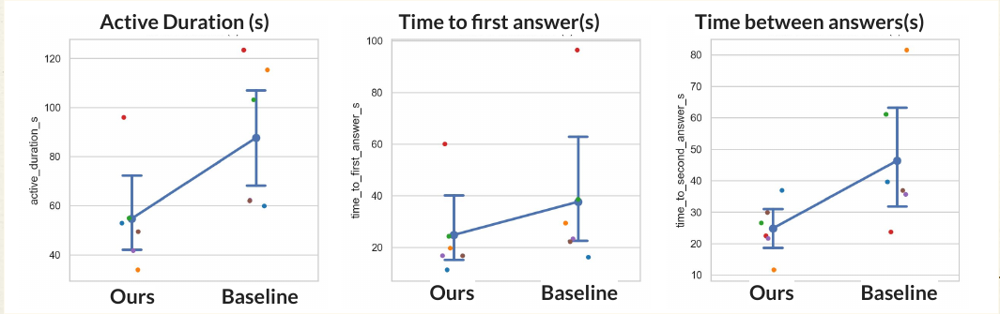
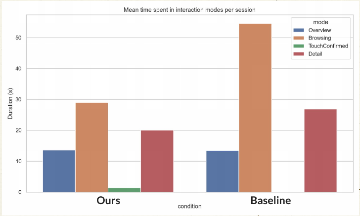
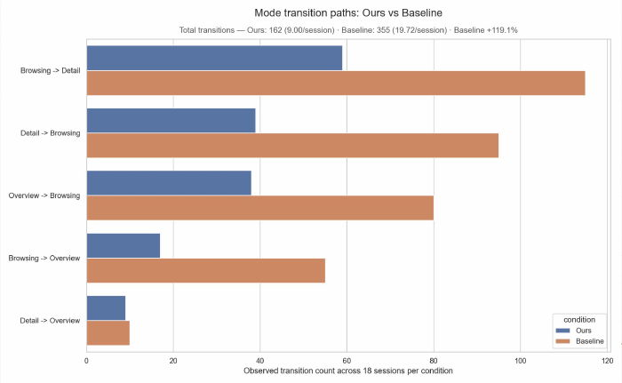
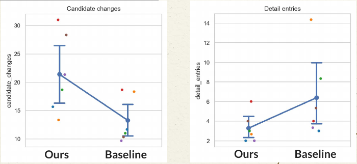
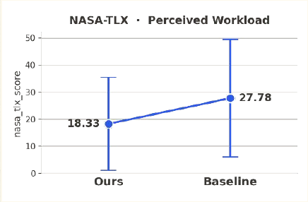
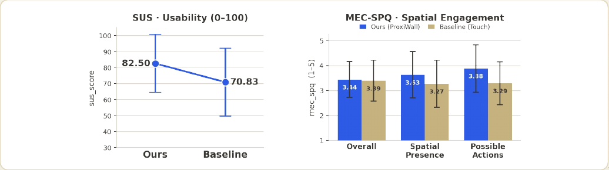

Age M = 25.33, SD = 1.21. Every participant experienced both conditions.
03 Final Study Results
Walking made search
faster and more spatial.
The final evaluation compared ProxiWall's distance-driven semantic zoom with Manual Touch Exploration. Both conditions reached perfect task success, but ProxiWall reduced completion time, lowered wrong-touch behavior, and was preferred by 5 of 6 participants.
01 / FINAL RESEARCH QUESTION
How can distance-based body input and direct wall touch be designed and evaluated as meaningful interaction modalities for the Overview → Browsing → Selection funnel of a wall-display virtual museum?
02 / STUDY DESIGN
One task.
Two navigation styles.
Participants searched for two described artifacts on a wall display. The same task was repeated under ProxiWall and Manual Touch Exploration in a within-subjects design.
Three tasks per condition, with practice, questionnaire, and final interview.
Each task asked participants to find two artifacts described on the side screen.
Each task randomly showed seven artifacts from the full pool.
Participants learned the shared display, tracked area, and verbal confirmation rule.
They practiced distance movement and touch controls before the main study.
Task completion, mode usage, candidate changes, and selections were logged.
After each condition, participants completed subjective questionnaires.
Semi-structured interviews captured naturalness, immersion, discomfort, and preference.
03 / CONDITIONS
Move with the body.
Or touch the wall.
Distance controls semantic zoom.
- Forward / backward
Distance automatically switches Overview → Browsing → Detail.
- Left / right
Lateral body movement browses through artifact candidates.
- Touch candidate
Wall touch confirms the current candidate and enters Selection.
Touch controls navigation.
- Touch to browse
Screen regions move to previous or next artifacts.
- Touch selection
The current artifact opens in detail / selection state.
- Touch again
Participants return and continue searching for the second target.
04 / QUANTITATIVE RESULTS
Faster completion.
Same accuracy.
Final results support H1 and H2: ProxiWall was significantly faster, while both conditions reached a ceiling-level success rate.
ProxiWall
42.02 s Manual Touch · p=.026Both conditions
36 / 36 correct per conditionProxiWall
9.58 Manual Touch · p=.022/sessionProxiWall
13.28 Manual Touch · richer spatial searchBrowsing was the main time sink.
Manual Touch spent much longer in Browsing (54.62 s) than ProxiWall (29.04 s), while Overview dwell stayed similar.
Touch created more back-and-forth.
Ignoring the transient TouchConfirmed state, Manual Touch generated 355 transitions versus 162 with ProxiWall.
Movement reduced operation overhead.
Walking let participants scan candidates spatially instead of repeatedly touching the wall to advance.







05 / SUBJECTIVE & INTERVIEW RESULTS
Lower workload trend.
Higher preference.
Subjective measures were directionally favorable for ProxiWall. Small N and wide variance mean some differences are descriptive rather than statistically conclusive.
ProxiWall workload score
27.78 Manual Touch · 34% lower, n.s.ProxiWall usability
70.83 Manual Touchpreferred ProxiWall
movement felt immersive and spatially naturalImmersive, natural, and easy.
Participants described direct interaction with the wall as feeling present inside the virtual museum. Several said walking was more fun, engaging, convenient, and easier than repeated touch.
Control mapping needs tuning.
Some participants found movement-to-view proportion unclear, lateral speed hard to control, or repeated zoom changes slightly dizzying.
Good fallback for confirmation.
Manual touch was less tiring for some users and useful for pulling up information or confirming a choice by hand.
Repetitive and error-prone.
Participants reported too much back-and-forth, hard separation between selection and movement, and uncomfortable touch misfires.
06 / DISCUSSION
Lead with movement.
Keep touch for commitment.
The final design implication is not to replace touch entirely. The strongest pattern is body-based navigation for exploration plus direct touch for final confirmation, information access, and error recovery.
Distance-based semantic zoom reduced task completion time.
NASA-TLX showed a lower workload tendency for ProxiWall.
SUS and interview feedback suggest higher perceived usability.
HMD-free wall interaction supports accessible, shared museum exploration.
07 / HYPOTHESIS OUTCOMES
ProxiWall achieved faster task completion time than Manual Touch Exploration.
Both conditions reached 100% task success, so accuracy did not differentiate them.
Workload was 34% lower with ProxiWall, but variance was wide.
ProxiWall showed higher SUS, stronger spatial engagement, and 5/6 participant preference.